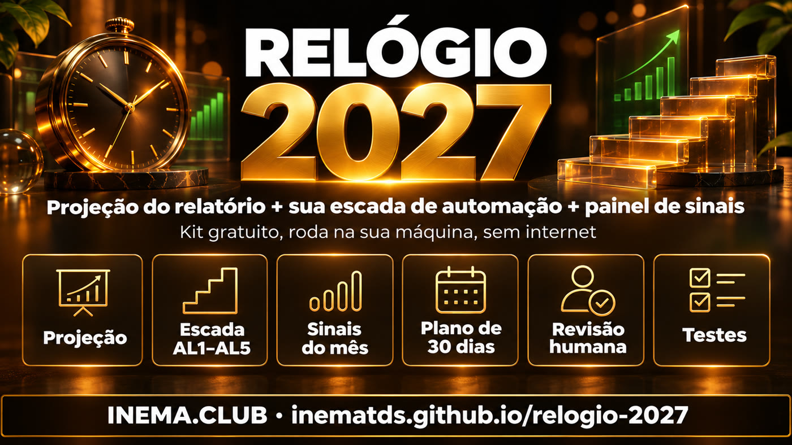

Os autores do cenário AI 2027 dizem que a realidade passou na frente. Este kit refaz as contas deles na sua máquina e mede quanto do seu trabalho a IA já lidera.
O Relógio 2027 é um kit gratuito de três scripts em Python para quem quer entender a velocidade da IA e se preparar sem pânico. O primeiro refaz as projeções da atualização de novembro de 2026 do AI 2027 e deixa você mudar as hipóteses. O segundo pega a lista das suas tarefas, dá um nível de automação de 1 a 5 a cada uma e mostra quanto da sua semana a IA já lidera, com um plano para o mês. O terceiro guarda os sinais que você acompanha mês a mês. Só precisa de Python 3; nada sai da sua máquina.
O que é
Três ferramentas, uma pergunta: o relógio adiantou para você?
Em 10/11/2026 o AI Futures Project (leia a atualização, em inglês) publicou que a aceleração causada pela IA já está cerca de 5 meses à frente do cenário AI 2027. O kit leva essa conta para o seu dia a dia.

📈 Projeção do relatório
projecao.py refaz as duas extrapolações simples: o ganho dos pesquisadores que dobra a cada ~3,4 meses e a curva da pesquisa totalmente automatizada (AL5). Você muda a dobra, o ponto de partida e o cenário.
🪜 Minha escada
minha-escada.py lê suas tarefas (horas por semana, nível AL1–AL5, crítica ou não), calcula quanto a IA já lidera, compara com os 26% da Anthropic e escreve um relatorio.md com o que subir e o que revisar.
📡 Sinais do mês
sinais.py compara os indicadores que você anota todo mês (METR, automação da Anthropic, receita, benchmarks) e mostra se o relógio adiantou ↑ ou atrasou ↓.
Como funciona
Do relatório para a sua semana
Os números públicos entram como constantes com a fonte comentada no código. Você troca as hipóteses e as suas tarefas; o kit faz as contas.
Números do relatório→Projeção com suas hipóteses→Suas tarefas em AL1–AL5→Relatório + plano do mês→Sinais mês a mês
Nível
O que significa
AL1
Você faz sozinho
AL2
A IA ajuda
AL3
A IA colabora
AL4
A IA lidera e você revisa
AL5
Totalmente automático
Pré-requisitos
Só o Python 3
Nenhum pacote para instalar, nenhuma chave, nenhuma conexão. Funciona em Linux, Mac e Windows. No Windows: instale o Python pelo python.org, abra a pasta do kit no Explorador, clique com o botão direito e escolha “Abrir no Terminal” (PowerShell), e troque python3 por py em todos os comandos.
🐍 Python 3
Confira a versão. Se aparecer “não reconhecido”, instale pelo python.org.
# deve mostrar 3.xpython3 --version
📥 O kit
Com git, clone o repositório. Sem git, baixe o ZIP, descompacte e abra o terminal na pasta relogio-2027-main.
Para editar os CSVs: qualquer editor de texto, Excel ou LibreOffice. Pode salvar como “CSV” normal do Excel: o kit aceita vírgula ou ponto e vírgula, e número com vírgula (2,5).
Guia de uso · passo a passo
Em 10 minutos
É extrapolação, não profecia: as datas são contas condicionais, não prazos garantidos.
1
Veja o relógio
Roda a projeção base e depois um cenário mais lento, para ver quanto as datas mudam. “30x” quer dizer que o pesquisador com IA rende 30 vezes o que renderia sem IA (ganho que eles mesmos declaram); “dobra” é quantos meses esse ganho leva para dobrar.
Abra kit/exemplos/minhas-tarefas.csv e troque pelas suas: tarefa, horas por semana, nível (AL1 a AL5) e se é crítica (s/n). Não conte a mesma hora duas vezes.
O script mostra a parcela das horas em que a IA já lidera (AL4+AL5), a projeção e as três tarefas para subir um nível neste mês. As críticas ficam na lista de revisão humana. Se você rodar sem trocar o exemplo, o resultado é do exemplo, não seu; para usar um arquivo próprio sem mexer no exemplo, passe --csv.
python3 kit/scripts/minha-escada.py# grava kit/relatorio.mdcp kit/exemplos/minhas-tarefas.csv minhas.csv# cria a sua cópia (Windows: copy)python3 kit/scripts/minha-escada.py --csv minhas.csv# usa a sua cópiapython3 kit/scripts/minha-escada.py --saida kit/relatorio-dez.md# guarda outra versão
4
Anote os sinais todo mês
Em kit/exemplos/sinais.csv os valores de exemplo são fictícios: troque pelos números que você coletar (mês, indicador, valor), sempre na mesma unidade e com o nome do indicador idêntico todo mês. O script não busca nada na internet.
mes,indicador,valor2026-11,Anthropic parcela AL4 em porcentagem,26python3 kit/scripts/sinais.py# ↑ adiantou · ↓ atrasou · média de dobra em meses
5
Use os prompts (opcional)
Em kit/prompts/ há três prompts para colar em qualquer IA: classificar suas tarefas em AL1–AL5, montar um plano de 30 dias para subir um nível e decidir o que manter com revisão humana. Não cole dados sensíveis.
# abra no Bloco de Notas (ou qualquer editor) e copie o texto:kit/prompts/01-classifique.md
6
Confira que tudo funciona
22 testes conferem as datas contra o relatório (tolerância de um mês), o exemplo e as mensagens de erro.
python3 kit/testes/run.py# Ran 22 tests … OK
Os relatórios originais
De onde vêm os números: os dois relatórios
Tudo neste kit sai de dois textos públicos, escritos pelo mesmo grupo de pesquisadores (AI Futures Project, liderado por Daniel Kokotajlo). Os dois estão em inglês; abaixo explicamos cada gráfico em português simples.
São os gráficos originais (por isso em inglês). Embaixo de cada um: o que ele mostra e o que isso quer dizer na vida real. Clique na imagem para ver grande.
1. O ritmo que o cenário previaO que mostra: três linhas subindo devagar e depois disparando. A azul ("Pace of progress") é a velocidade do progresso da IA. No cenário AI 2027, ela chegava a 1,7x (70% mais rápido que o normal) só em abril de 2027.Na prática: esse 1,7x já foi medido agora, em novembro de 2026. Daí vem o "5 meses adiantado".2. Por que o motor precisa ser 5x mais forteO que mostra: um carro numa ladeira. A ladeira é a dificuldade: cada descoberta nova é mais difícil que a anterior. Para o carro andar 1,7x mais rápido subindo, o motor (a ajuda da IA aos programadores) precisa ser uns 5x mais forte.Na prática: ver "só" 1,7x no resultado significa que a IA já está fazendo muita força por trás.3. A medição independente (METR)O que mostra: cada ponto é um modelo de IA da Anthropic (Opus, Sonnet…) com sua nota de capacidade. Até outubro de 2025 os pontos seguem uma reta; depois a reta fica mais inclinada.Na prática: um grupo de fora (METR) mediu que a Anthropic passou a progredir ~2x mais rápido. Não é opinião dos autores: é medição.4. A IA já comanda 26% da pesquisaO que mostra: as faixas coloridas são níveis de uso da IA na pesquisa da Anthropic, do "sem IA" (claro) ao "totalmente automático" (escuro). A parte laranja forte é onde a IA lidera e a pessoa só revisa.Na prática: isso saiu de 1% em março para 26% em agosto de 2026. Em cinco meses, um quarto do trabalho passou a ser conduzido pela IA.5. O ganho de cada pesquisador dobra a cada 3,4 mesesO que mostra: quantas vezes mais rápido um pesquisador trabalha usando IA. A escala sobe de 10 em 10 vezes (1x, 10x, 100x, 1.000x). A linha azul é o que foi medido até hoje; a tracejada é a continuação.Na prática: hoje é 12x. Se o ritmo seguir: 30x em mar/2027, 100x em set/2027, 1.000x em 2028. A linha vermelha é a estimativa mais conservadora do METR.6. Quando a pesquisa fica totalmente automáticaO que mostra: curvas em forma de "S" (começam devagar, sobem rápido e estabilizam). Cada uma é um nível de automação. A laranja tracejada é a pesquisa 100% feita pela IA, que ainda não aconteceu: é uma previsão.Na prática: se repetir o padrão das outras curvas, 50% da pesquisa seria totalmente automática em junho de 2027 e 95% em novembro de 2027.7. Cinco anos de progresso num ano sóO que mostra: quanto a IA avança em cada ano, comparado com um ano "normal" (1,0 = média de 2024–2025). Azul e vermelho são dois autores com contas um pouco diferentes.Na prática: 2026 rendeu 1,4 ano de progresso. Para 2027 eles esperam de 4,2 a 4,9 anos de avanço em 12 meses.
O ajuste: o que o cenário previa × o que está acontecendo
Pense numa viagem. O GPS (o cenário AI 2027) dizia que você chegaria a cada cidade em certa data. Agora, olhando a estrada de verdade, os próprios autores refizeram a conta e viram que estamos chegando antes.
O marcoO que se previaO que está acontecendoDiferença
IA deixa o progresso 1,7x mais rápido70% mais rápido que o normalabril de 2027no cenário AI 2027novembro de 2026já medido5 meses antes
IA pesquisadora melhor que o melhor humanoquando a IA passa a criar a própria IAdezembro de 2028previsão de Daniel em agosto/2026maio de 2027previsão de Daniel agora19 meses antes
Pesquisa que a IA conduz sozinhaa pessoa só revisa1%março de 202626%agosto de 202626 vezes mais em 5 meses
Ganho de um pesquisador com IAquantas vezes mais rápido12xsetembro de 2026~100xsetembro de 2027 (projeção)dobra a cada 3,4 meses
Progresso de IA em um ano1 = um ano normal1,4 anoem 20264,2 a 4,9 anosem 2027 (projeção)cerca de 3x mais
Em uma frase: o cenário AI 2027 parecia exagerado quando saiu; um ano e meio depois, os números reais estão andando mais rápido que ele. Por isso o kit pergunta: e no seu trabalho, o relógio também adiantou?
Atenção: "medido" é o que já aconteceu; "projeção" é esticar a curva, e pode não se confirmar. Os próprios autores avisam que há bastante incerteza.
Os gráficos
Antes × agora, em quatro gráficos
Comparativos com os números da atualização de 10/11/2026. Barra lisa = medido ou previsão; barra listrada = projeção (esticar a curva). Passe o mouse para ver o valor.
A previsão andou 19 meses
Meses a partir de novembro de 2026.
Pesquisador de IA sobre-humano: 19 meses mais perto
Previsão de agosto
dez/2028
Previsão de agora
mai/2027
IA acelerando o progresso em 1,7x: 5 meses antes do cenário
No cenário AI 2027
abr/2027
Na realidade
nov/2026
antes / cenárioagora / medido
O Claude já lidera 26% da pesquisa
Parcela da pesquisa de modelos da Anthropic em que a IA lidera (2026) e a projeção de totalmente automático (2027).
1%
12%
14%
22%
26%
…
50%
95%
marmaijunjulago/26jun/27nov/27
medidoprojeção
O ganho dos pesquisadores dobra a cada ~3,4 meses
Quantas vezes mais rápido o pesquisador trabalha com IA (escala logarítmica: cada passo é 10x).
set/2026 (medido)
12x
mar/2027
30x
set/2027
100x
ago/2028
1.000x
medidoprojeção
Cinco anos de progresso em um
Anos de progresso de IA por ano de calendário (1 = média de 2024–2025).